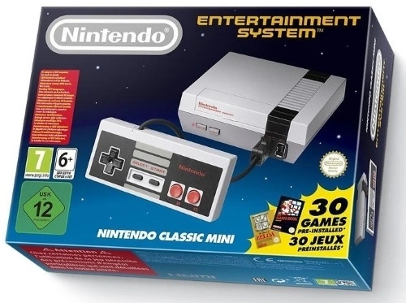

Nintendo Entertainment System
NES blev direkt en storsäljare på den snabbt växande TV-spelsmarknaden.
Konsolen baserades på kassett-teknik och 8-bitarsteknik och fick därför även namnet Nintendo 8-bit.
Till NES utkom en lång rad klassiska TV-spelstitlar där Super Mario Bros. förmodligen är den största av dem.
Efter att SNES lanserats i Japan 1990, i USA 1991 och i de flesta av Europas länder 1992 tappade NES position och slutade några år senare att tillverkas.
Famicom slutade tillverkas 2003 i Japan.
Maskinens stora spridning har under senare tid orsakat en alltstörre kult- och retrostatus.